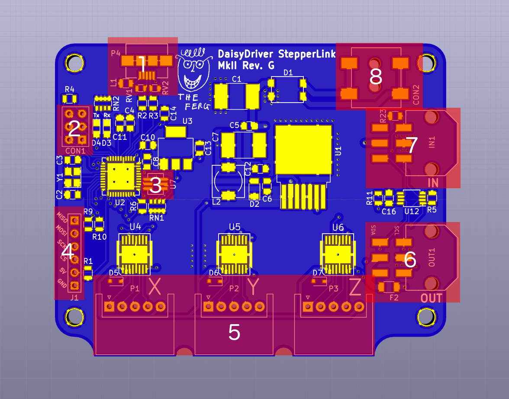

Operating Instructions
Before operating the DaisyDriver, it is important to familiarise yourself with the locations of the important features on the module. These are shown below, and numbered when mentioned in the text.
List of Main Components Corresponding to Image Numbers:
- USB micro B connector
- ISP 6 header
- Status LED
- SPI header
- Motor connector
- OUT chain connector
- IN chain connector
- Power connector
DaisyDriver is composed of modular units, each of which can operate separately or as part of a chain, connected by cables. Chained operation is useful to extend the number of axes that can be operated simultaneously. When operating modules in a chain, it is essential that the chain is not broken or added to whilst the chain is powered on, otherwise damage can result to the modules.
When adding motors to an existing setup, first site the modules at each group of motors. Once the modules are secured in place, they can be connected with cables. It is important that modules are joined in order, i.e. cables always run from the OUT port (6) of one module to the IN port (7) of another. Once the modules have been connected in a chain, the start of the chain (the module at one end of the chain which outputs to the remainder of the chain) can be connected to a computer using a USB A to Micro B cable (1). The power cable can be plugged into any of the units (8), though it is often convenient to connect it to the start of the chain.
When power is applied, all the units in the chain should blink their status indicator LED (3) in the sequence Red-Green-Blue. Each unit will then momentarily turn its status indicator Red to indicate that it is waiting to be initialised, before blinking Green a number of times corresponding to the module's physical position in the chain, which is also its logical address.
Once the chain has been powered on successfully, it is ready to be controlled.
DaisyDriver can be controlled in one of two modes: Serial Command or GUI.
Serial Command offers control of a chain of DaisyDrivers through a command line interface. More detail is available on the Serial Command page.
The DaisyDriver GUIis a specialised graphic interface for using the DaisyDriver with a WaterScope for time lapse microscopy. More detail is available on the GUI page.